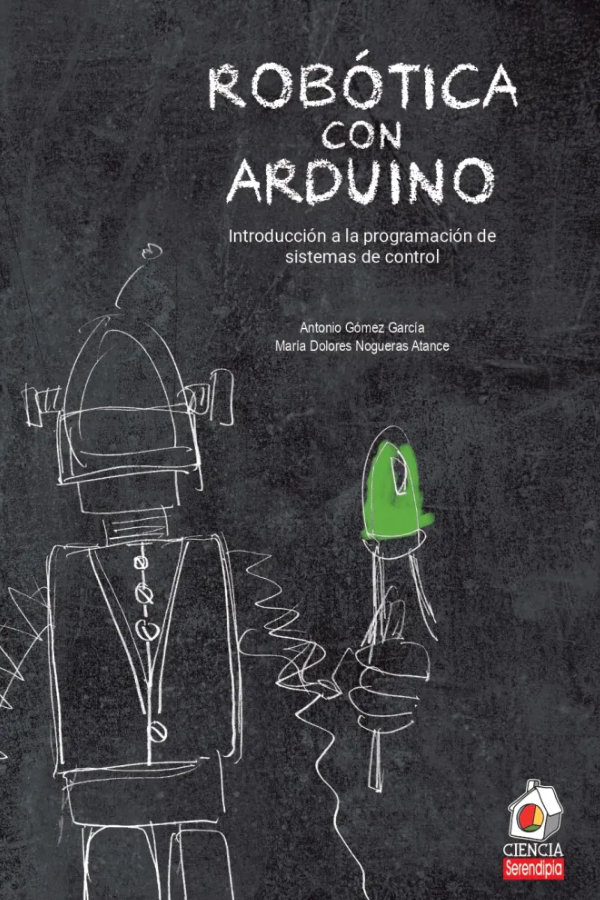
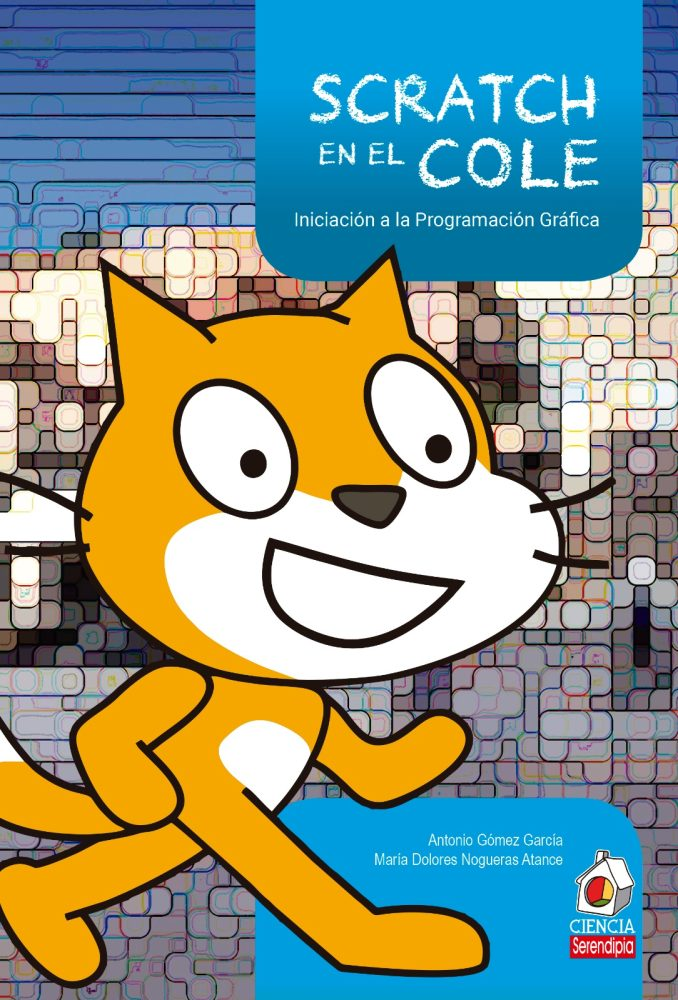

¿Quién soy? ¡Vaya pregunta!
Autor: Antonio Gómez García
Bio: Profe, padre y tecnólogo. Soy penoso en al menos dos de esos perfiles, pero lo intento con toda mi alma todos los días. Soy profe en el IES Maestro Juan de Ávila de Ciudad Real, como profe de Tecnología, de Robótica y de Ámbito Científico-Tecnológico para los alumnos de Diversificación Curricular. Estos últimos años es lo que más he disfrutado profesionalmente. Como no tengo bastante encima, en la actualidad soy Jefe de Estudios Adjunto, lo que me garantiza un aluvión diario de marrones que voy toreando como mejor puedo, ¡apenas sin llorar!. Soy padre del robot Masaylo, que los amiguetes del Club de Robótica de Granada me ayudaron a digievolucionar hasta su versión 2.0. Soy aficionado a la robótica, la impresión 3D, y el mundo maker en general.
Presencia en las redes: Puedes echar un vistazo a mis movidas en mi web del Aprendiz de Tecnólogo; aunque la tengo un poco desactualizada, la estoy recuperando. También actúo bastante en Twitter (sigo llamando Pryca al Carrefour, me vas a decir a mí que llame a esto X).
Publicaciones
Aparte de artículos varios en distintos medios (puedes cotejarlos en mi web), soy el orgulloso coautor de dos libros: Robótica con Arduino y Scratch en el cole, gracias al buen hacer y la disposición de los amigos de Serendipia Editorial
|  |  |
Motivaciones
Tengo hambre de SABER, porque quiero ENTENDER. Nadie dijo que tengas que hacerme caso. Yo no lo haría.